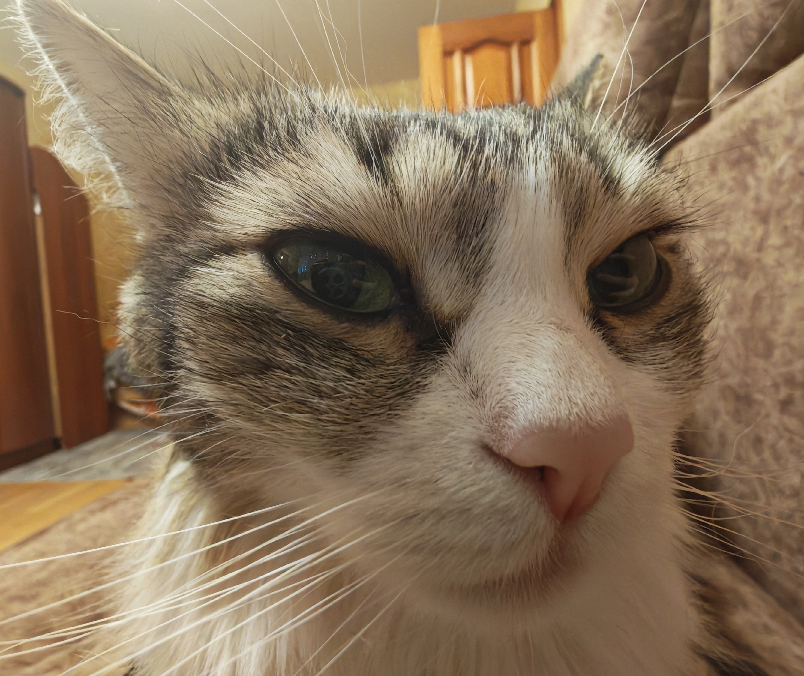

Добро пожаловать на страничку моей кошечки Бетти! 🐱
Этот сайт посвящён моей пушистой любимице — Бетти. Здесь я собираюсь рассказывать о ней,её жизни, привычках и маленьких радостях каждого дня.
Что вы найдёте на этом сайте:
Личная история Бетти
Здесь я подробно рассказываю о своей любимице — трёхцветной красавице с белым, серым и коричневым окрасом. Вы узнаете:
- Как мы выбирали имя (спойлер: оно пришло из сериала «Ривердейл»!)
- Особенности характера трёхцветных кошек>
- Ежедневные приключения и забавные случаи
- Этапы взросления и развития
Система отслеживания состояния питомца
Я веду подробный мониторинг всех аспектов жизни Бетти, и вы сможете увидеть:
- Сон: сколько часов в сутки спит кошка, в какое время предпочитает отдыхать, какие места выбирает для сна
- Питание: подробный рацион, режим кормления, любимые и нелюбимые продукты, реакции на новый корм>
- Распорядок дня: как организован типичный день активной кошки, время игр, отдыха и общения
- Настроение и самочувствие: эмоциональное состояние, признаки здоровья, особенности поведения
Полезные советы для владельцев кошек
На основе личного опыта и изучения информации я делюсь практическими рекомендациями:
- Как выбрать имя для котёнка и что учесть при этом
- Как организовать пространство для кошки в доме
- Как понять настроение питомца по его поведению
- Как подготовить дом к появлению котёнка
Бетти — это не просто питомец, а настоящий член семьи! 💕
Этот сайт поможет мне лучше заботиться о ней, отслеживать её привычки и сохранять все важные моменты её жизни.
